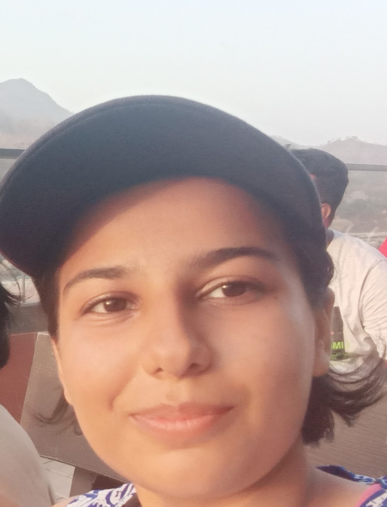
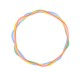
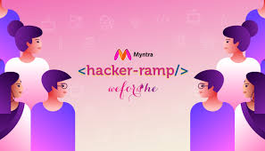

|
Aastha Kataria
I'm fascinated by wildlife and find deep joy in discovering mathematical patterns in nature. There is so much to this world, from the unexplored vastness of the universe to the deepest crevices of the ocean, from the workings of the mind to the depths of the soul. We may not know much, but the curiosity to learn and ask questions is always there, where imagination meets discovery and leads to invention.
Math is not just numbers. Feelings are not just words. Human nature is a terse language with a lot left unsaid. I want to build everything I can, things that people can actually use. Enjoying the work, staying open to suggestions, and embracing the mutations that come from collaboration: that is what life is all about.
I'm a recent graduate from K.J. Somaiya College of Engineering, Mumbai, with a B.Tech in Information Technology and Honours in AI, with a long trail of coding, building, and learning, including working with robots from scratch.
Email /
CV /
GitHub /
LinkedIn
|

|
|
Research Papers
Lorenz
I focus on AI applications in healthcare and robotics, developing practical machine learning solutions for real-world problems.
|
|
Hackathons
Finance
Competition-driven development projects showcasing rapid prototyping and team leadership skills.
|
|
|
SimpleSwastha: Hospital Management System
Aastha Ketan Kataria (Team Lead)
Smart India Hackathon, 2024 — WINNER
Led team to victory in national hackathon, selected from 500+ applicants to final 5 teams. Developed comprehensive hospital management application for patient care and medical record management.
|
 |
MoneyMind: Multi-Agent Financial Assistant
Aastha Ketan Kataria (Team Lead)
Google Solution Challenge, 2024
Multi-agent GenAI financial assistant powered by Google Gemini for new investor guidance. Built complete system from concept to deployment despite hardware constraints.
|
 |
Myntra WeForShe Hackathon
Aastha Ketan Kataria (Team Lead)
Myntra WeForShe Hackathon, 2024 — PRE-FINALIST
Advanced from 1000+ participants through multiple rounds to reach the Grand Finale. Demonstrated product development and pitching skills in competitive fintech environment.
|
|
Robotics Team
Halvorsen
Leading marine robotics development for environmental applications using ROS and autonomous systems.
|
|
|
The Marine Robotics Team: Aquatic Environmental Systems
Aastha Ketan Kataria (Team Captain)
Ongoing Project, 2023–2025
Leading development of 'Nisrag,' a sewage cleaning robot, an aquatic desilting robot, and a drone-based groundwater mapping system using ROS. These systems address environmental challenges through autonomous robotics and sensor integration.
|
|
Industrial Projects
Aizawa
Applied AI research in industrial settings, focusing on computer vision and quality control automation.
|
|
|
Real-time Contaminant Detection in Industrial Sugar Production
Aastha Ketan Kataria (Project Lead)
Godavari Biorefineries Ltd., 2024–2025
Leading team of 15 to develop YOLOv8-based real-time contaminant detection system for industrial sugar production lines. Project focuses on automating quality control in manufacturing environments.
|
Research Intern
K.J. Somaiya College of Engineering, Mumbai
Guide: Dr. Sudhir Ranjan Jain
Working on three research threads under quantum mathematics and physics:
- Quantum speedup algorithm for random number generation.
- Mathematical analysis of nodal domains in equilateral triangles and their boundary behavior.
- Quantum surface codes generalizing configurations for D nodes and m ancillary bits within topological structures.
AI Engineer Intern — CredArtha (2025)
Developing FINA, a financial LLM. Working on model fine-tuning, RAG systems, and financial AI applications.
Project Lead — Godavari Biorefineries Ltd. (2024–2025)
Leading 15-person team developing AI-based quality control systems for industrial manufacturing using computer vision.
Summer Intern — PiPay (2024)
Built WhatsApp automation workflows for fintech applications including loan processing and supply chain finance.
Developer — Virtual Labs (2025)
Created educational cryptography tools and virtual lab environments for computer science education.
|
|
Selected Awards
Rössler
Smart India Hackathon 2024 Winner · Myntra WeForShe Hackathon Pre-Finalist · Best Speaker Award (ICTEAH 2025) · Top 70/300 at "Story of Makers" Exhibition · Third Place at INSEF Science Fair
|
|
Background
Sprott B
My interdisciplinary foundation spans athletics (table tennis, gymnastics, sailing), Sea Cadet Corps, and early robotics work. From building auto-movable shopping trolleys in middle school to leading teams in national hackathons — each experience has built resilience and problem-solving skills that inform my current research and development work.
|
Website design inspired by Jon Barron
Last updated: June 2026
|
|
{kind=link}